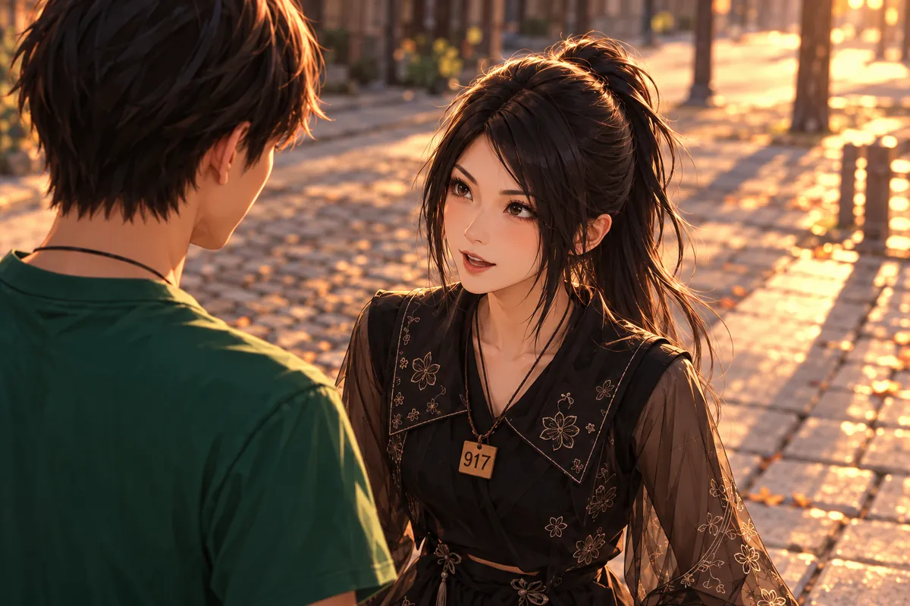

黑糖倒在雨裡，濕透的毛貼著身體。
他已經站不起來，仍盯著旁邊的橘貓，告訴牠綠色的糖有毒，不要吃。
橘子起初不懂。東西放在地上，有甜味，像那些偶爾能找到的食物；黑糖卻不讓牠靠近，連自己已經沒力氣挪動，也要把頭轉向那邊。
貓碰了碰他的臉。他想抬頭，脖子卻沉，身子跟著抖了一下。橘子往後退，沒有走遠，仍在他看得見的地方，像要等狗起來再一起找能躲雨的屋簷。
雨太大，地上的水一會兒便變了樣。他往前看，原本熟悉的路忽然很長，平常幾步就能過去，現在竟得先想想怎麼把一隻腳挪開。
橘子還在等。他便不再說自己可以，把能說的話留給牠，催牠離開綠色的東西，催牠聽見車便跑。只要貓肯走，他還能看著那個橘色的背影，一路跑到比較安全的地方。聽見車聲，他又急著催牠跑。自己疼不疼，反而沒有說。
照相館裡，黑糖變成穿狗骨頭Ｔ恤的少年，坐得筆直。隔壁的白妹剛抱怨完同事去北境玩，把冰棒棍塞給大寶，便去接客人了。那麼平常的一個下午，少年卻連眨眼都小心。
大寶指了指相機。
「想著你思念的那件東西。」
「這樣就能見到橘子？」黑糖問。
「只要牠還活著，就能託夢。試試看。」
少年摸頸上的牌子，又立刻把手放回腿上。他第一次用兩隻手這樣坐著，動作總嫌多，好像每一回伸手，都有什麼會被自己碰倒。
大寶讓他不用挺得那麼直，不是考試，也沒有人要檢查他合不合格。黑糖點頭，肩膀卻沒有鬆。
「我只想知道牠怎麼樣。」
「想著牠就好。」
他閉上眼。腦裡先出現雨，又是那團綠色，接著才找到橘子的臉。他急著把不想看見的挪開，越急，越記起自己倒下的樣子。
大寶等著，沒有叫他立刻專心。相機前安靜了一會兒，黑糖終於想起橘子走路時尾巴翹起的方式，想起牠每次先鑽進窄處，又回頭等自己。那個身影一清楚，他胸口便跟著緊了，卻比剛才更願意往前。

「希望牠沒事。」
夢裡，救援女子抱起橘子。牠有了人可以跟，可以去有屋頂的地方，可以吃罐罐。
黑糖催牠走。
橘子回頭，問不能一起嗎。
救援女子的手託在貓肚子下，橘子下意識踢了一下，又看黑糖。牠以前很少讓陌生人碰，遇到有人蹲下，大多先跑；如今狗不肯跟，牠連跑都不知道該往哪裡。
黑糖把話說得很用力，讓牠聽清楚有罐罐，有屋頂，可以去。說完才發現，這些都是自己以前也會跟著高興的東西，現在卻只能站在旁邊替牠挑好。
橘子往他的方向伸出一隻爪。女子以為牠要掙脫，低聲哄，將牠抱穩。黑糖沒有再靠近，怕貓一看他往前，就以為真的能一起走。
「妳要去。」
他想說以後還會來看，卻還不知道這裡能不能允許。只好先叫牠吃飽，別再回去找地上的東西。橘子望著他，直到女子轉身，那一點橘色才慢慢離遠。
黑糖望著牠。雨裡最後沒說完的話，仍哽在心口。他多想並肩跑過去，可是只能讓橘子往前。
託夢時間到了。
「你在地府好好做慰靈犬。」大寶對黑糖說，「功德存夠，還能來找我。」
黑糖坐得筆直。「不是今天就不能再見了？」
「不是。」
「那我要存多少？」
大寶看著他那副急著出發的樣子，放慢聲音。「照工作規矩來，不用一口氣做完。」
「我做得慢，你會不會忘記我？」
「不會。」
黑糖盯著他，似乎還想再問一次。大寶伸出手，摸摸他的頭。
「你來的時候，我就認得。」
黑糖握住頸上的牌子，點了頭。至少，下一次來時，他能知道橘子有沒有吃飽，有沒有人摸牠的頭。
杜先生不開門。
「我不需要慰靈犬。」
黑糖站在門外，把準備好的安慰留在嘴邊。
他把手放下，原本還想再敲一次，怕剛才太輕、裡面沒有聽見。門內已經回答，他卻仍拿不準接下來怎麼做。
有人教過慰靈犬該來看新到的靈魂，教過要讓對方慢慢適應，可是沒有一句能直接放進這扇門。黑糖站得靠前些，那股味道便濃；退一步，又覺得自己什麼都還沒試。
「我不會待很久。」他小聲說。
門沒有開。
他轉頭看路，大家都有要去的地方。自己的第一次工作卻卡在這裡，連對方的臉都沒見到。他想到照相館，想到要存夠功德才能去看橘子，額頭便慢慢低下。
那時咪咪走過來，叫他的名字。他先驚了一下，才記得自己現在已經有名字，也有人知道他在這裡做什麼。他的第一件任務，還沒開始就碰了壁。沒功德，就不能再去見橘子；可是門內的悲傷又重得讓他不敢硬闖。
咪咪找到他，邀他散步。

引渡貓與慰靈犬要合作，幫靈魂適應這裡。杜先生下車時，她就聞到濃濃的悲傷。現在，黑糖身上也有。
「先來我家吃飯吧。」
黑糖先看她的號碼牌。自己方才做得很糟，她卻沒有要他回去再想辦法，竟先問吃飯。這個順序跟他以為的不一樣。
「可是杜先生……」
「明天再來啊。」
「肚子餓不餓？」咪咪指了指黑糖的肚子。
「還好。」
她等了一下。
黑糖的肚子叫了。
「它跟你說的不一樣。」
「我可以再站一下。」
「為什麼要站？」咪咪已轉身朝家的方向走，「先吃飯。」
黑糖趕緊跟上。「我沒有說要吃。」
「那你到了再說。」
「到了可以說要嗎？」
咪咪回頭看他。「就是叫你去吃飯啊。」
咪咪笑他想太多，說爸爸會煮。提到家，她的語氣一下得意起來，介紹桌子、介紹能坐的位置，像已經替他排好，不準再拿喜不喜歡狗當理由。
黑糖聽著，那股沉在身上的味道沒有立即散，腳卻肯跟著走了。轉彎前他仍回頭看門，咪咪也看了一眼，沒有催他忘掉，只說她認得路，下一次兩個一起來。
黑糖跟到一半，還是停下來。
「妳家裡……喜歡狗嗎？」
「我爸爸媽媽最好了。」咪咪回頭，「而且爸爸做飯很好吃。」
「真的可以去？」
「我都叫你來了。走啦。」
她說得太肯定，黑糖便又往前走了一步。
門的另一側，杜先生仍坐著。
求婚那天，他拉著筱晴的手問：「鑽戒要幾克拉？」
「那麼貴，買什麼鑽戒。」
「不然妳想要什麼？」
「你替我們設計紋身吧。漂亮的鬱金香，一人一個。」
他答應了。
筱晴把他的手拉過去，先在自己腕上比了一下，說圖不要太大，太大穿衣服不好看。他故意問，那還叫定情嗎，她便說，定情是因為他畫，不是因為每個人都要看得見。
杜先生笑了，低頭看她比的位置。她不是隨口嫌鑽戒貴，也不是沒有想過以後；她把兩個人的日子放在一起算，算到最後，仍覺得可以用他最擅長的東西留下來。
「鬱金香要畫幾朵？」杜先生問，「妳喜歡開一點，還是花苞多一點？」
筱晴看著他。「你現在是在問我，還是在接客人的預約？」
他手上的動作停了。「我想畫得好一點。」
「我知道。」
「顏色呢？妳剛才說漂亮，我怕我想的跟妳想的不一樣。」
她伸手碰了碰他的手背。「先看我一下。」
杜先生抬頭。
「你問這麼多，我都快忘記你原本在說什麼了。」
他這才發現，自己又躲進最熟悉的線條裡。
他握住她的手，說不一樣，這個要畫好一點。
到了地府，他還記得那句話。手指只要一動，圖的形狀就會回來，偏偏該把手伸給他的人不在。門外有人，他也不知道如何把這件事講明白。
隔天，在路口停等紅燈的車，被毒駕撞上。
電話打到筱晴那裡。對方報了地址，請她過來認屍。筱晴握著電話，連一句話也答不出。
杜先生閉上眼。門外的腳步慢慢走遠。他仍想著那兩朵還沒好好交出去的花，不知道要怎麼離開這張椅子。
照相館關門後，大寶還在學怎麼整理相機。
以前是消防器材，如今是鏡頭、背景布和預約簿。做什麼都得把東西放回固定位置，他習慣了，只是偶爾伸手，仍會去摸早已不在腰間的無線電。
小雨提著晚餐來，站在門口看他。
「今天沒有火要你去救。」
大寶看見飯盒，笑了。「妳煮的？」
「你那是什麼表情。」
窗外響起貓叫。咪咪在催他們回家。兩人熄燈、鎖門，隔壁髮廊卻還亮著。白妹在裡面清理梳子，老闆站在門邊等她。
小雨走了幾步，回頭望一眼。
白妹收好最後一把梳子，抬頭叫老闆進去幫她關燈。小雨笑了，拉著大寶繼續往家走。
咪咪一早說要加班，出門比平常勤快。
大寶穿著睡衣，與小雨猜她和黑糖是不是在談戀愛。
咪咪在關門前又探進頭。
「今天不用等我睡回籠覺喔。」
門一合上，小雨便看向大寶。
「以前叫都叫不起來，現在還會報行程了。」
大寶望著門，嘴角動了動。
大寶把鍋移離爐火。
「也許只是同事。」
「同事會每天約嗎？」小雨端著碗看他。
「我們以前同隊，也是天天——」
她笑著截住他：「你知道我不是在講那種天天。」
「那不一樣啦。」
他想一下，點頭承認不一樣。早餐的香味在小小的空間裡散開，小雨站得近，他讓她先坐，免得擋到爐邊。她偏要靠著，說自己也想談戀愛。
大寶抬眼，剛好碰到她的目光。鍋裡的蛋還不能不顧，他只好用吃早餐搪塞，耳朵卻先紅了。小雨聽完，立刻說自己也要談。
「先吃早餐啦。」
她把碗接過來，故意多看他一眼。大寶笑著移開目光，裝作只關心煎得好不好的蛋。
杜先生門外，黑糖叼著牽繩，背上粉紅揹包裡坐著咪咪。
門才開一條縫，杜先生便看到兩雙眼睛。
「不是說我不需要！」
杜先生原本只想開門確認，這一聲喊完才看清，狗嘴裡的牽繩已經送到自己面前。粉紅揹包上那張貓臉十分安定，像今天的事情從頭到尾都不需要詢問他。
他要把門合上，黑糖往前挪一步，沒有吠，目光卻不肯退。杜先生站了一會兒，先是氣，再是拿這兩個沒辦法。
「走到外面就好。」
咪咪坐在揹包裡，並沒有答應距離。黑糖一聽肯出門，腳便先動了，杜先生還沒準備好，身子跟著一晃，連忙抓穩牽繩。
「慢一點！」杜先生抓緊牽繩，「黑糖，我鞋還沒穿好！」
狗回頭看看，腳卻沒停。咪咪從粉紅揹包裡探出頭，望向前面的路。
「我只答應出去一下。」
黑糖把他往下一段路帶。
杜先生只好跟上，鞋底在路上擦出一聲。他抬頭看見有人回望，趕緊把牽繩縮短。
「不是，我沒有在跟狗吵架……」
他自己說完也覺得好笑。好多天沒有說得這麼大聲，嗓子竟有點不習慣。
回答他的是往前一扯的力道。
黑糖跑起來，杜先生被拉得連聲喊慢一點。咪咪在揹包裡坐得很穩，像早已核準這個治療方案。
河邊的風掠過草地。他們走累了，就並排坐下。
杜先生坐得不太自然，膝蓋往前伸，不知道該讓貓在哪裡。咪咪自己找了一塊舒服的地方趴下，黑糖也靠過來，身上的熱度貼住他腿邊。
他先把手放在身旁，接著又挪回膝上。人一閒下來，筱晴的名字就會回來，他怕自己再把這兩個牽連進去，卻又沒力氣站起來躲。
河面有光，風吹過，影子一小段一小段地碎。黑糖抬頭看他，他以為該說點什麼，狗卻又把頭擱回原位。咪咪甚至閉了眼，像真的只是來睡。
杜先生等了一會兒，始終沒有人問現在是不是比較好。他不必立刻證明這趟有用，也不必為了回報好意，把難過說得輕一點。
手先落到黑糖背上。毛被風吹亂，他順了兩下，才意識到自己已經很久沒有這樣安靜地碰一個會回應的生命。沒有誰要求杜先生立刻說出感想，也沒有誰提那場車禍。貓趴著，狗靠過來，黃昏一點一點落在水上。
杜先生的手，終於落到牠們頭上。
「謝謝。」
他摸了很久，才接著說：「我會努力走出來。」
黑糖沒有催。他只把頭再靠近一點，讓那隻手不用懸在空中。
黑糖第一次來吃晚飯，站在玄關，不肯直接進。
大寶讓他坐，他先看地板，再看自己的腳，彷彿把外面的灰帶進來，便會失去下次被邀請的資格。
咪咪從旁邊擠過去，說再不進，菜都涼了。她毫不遲疑，熟悉得讓少年羨慕。
小雨多拿一個碗，沒有問他打算留多久。
吃飯時，咪咪嫌她煮的雞胸肉。大寶把自己的菜分過來，咪咪嘴裡還嫌著，手卻伸得很快。黑糖看兩人鬥嘴，慢慢也笑。
他想到橘子。牠現在是否也有這樣一個地方，有人不介意添一隻碗，有人讓牠進門，不必先證明自己多乖。
大寶問好吃嗎。
黑糖點頭，接著問，明天慰靈的工作若又失敗，還可以來嗎。
小雨把湯推近。
「吃飯又不是頒獎。」
黑糖低下頭，湯面的熱氣湧到眼前。他沒有立刻把碗端起。那個怕弄髒地板的人，終於敢把腳放得自然一點。
月老把預約交給杜先生，問他敢不敢接。
月老把預約簿推到杜先生面前。
「生前會紋身？」
「會。」
「做過哪些？」
杜先生先看了一眼預約簿上的名字，才慢慢說起自己的工作。
他報了幾次得獎，說完又覺得這些到了地府未必算數。以前客人聽見會多問兩句，眼前的年輕神明卻只點頭，像這不過是確認他能拿穩器具的第一步。
店裡的樣品比他熟悉的圖更奇怪，線條不只交代好看，還像必須落到某個他暫時看不見的地方。月老讓他別急著把陽間那一套全搬來，先聽規則。
杜先生應了。這些天他對每一件新事都先退開，如今卻肯把椅子往前拉一點。只要對方說的是紋身，他就仍有一個位置，可以認真聽完再問。
這裡的紋身不只留在皮膚上。花三百功德求得的愛戀文印，過了奈何橋、換了人生，仍能隨相愛的人一起走。
杜先生低頭看自己的手。
他曾拿這雙手贏過獎，如今卻連如何把自己從房間裡帶出去，都得靠一隻狗和一隻貓。
「我想幫助相愛的人。」
預約的兩位男子坐在一起，彼此的手從未放開。他們希望下一次，能去沒有歧視的地方。
其中一人說得快，另一人只看著他，偶爾補一句。杜先生聽懂了。他們已經相愛，只是希望下輩子能大方牽手，不必再先看看四周有沒有別人。
他問兩人能不能放鬆些，好確認落筆的位置。握住的手終於分開，一隻卻立即放到另一人的肩上。這些細小的動作他在店裡見過很多，過去只覺得戀人總是黏，今天看著，竟有些羨慕。
他把注意力收回線條。客人的願望不是拿給他提醒自己失去什麼的，他若真想做這份工作，眼前這個人就得先被照顧好。
於是他問有沒有不舒服，等對方答，才繼續。月老站在旁邊，沒有插手，讓他自己把每一段落筆做完。
針聲細細響著。杜先生俯身，讓每一道線都穩下來。其中一人緊張得握住伴侶的手。杜先生停下，等他點頭才繼續下針。
文印完成，兩人牽手走向奈何橋。
「分店交給你。」月老說，「但我剛才講的，別只記一半。」
杜先生點頭。「一天一次。」
「第二次呢？」
「不能做。」
月老看著他，等他把後半句說完。
杜先生的手慢慢放下。「我沒有神格。做第二次，靈魂撐不住。」
「會散。」
「我知道了。」
「客人會急，也可能說只差這一次。」月老的聲音沒提高，「你不能因為聽不得人難過，就把自己也送進去。」
杜先生低頭看了看手。「我會記住。」
杜先生記住了。
做完之後，他坐了下來，手還留著方才的姿勢。疲倦從肩膀慢慢往下走，跟生前忙一下午的累不太一樣，像自己也有一部分跟著那些線挪進了客人的靈魂裡。
月老看見，叫他不要逞強。杜先生說還好，話出口便知不太像實話，只好又點一次頭，說確實挺累。
「今天就到這裡。」
神明把規則再說一遍。不是多休息一下就能再做，也不是技術好便能超過。沒有神格，一天就是一次。杜先生聽著，望向已經走到門外的兩位客人，終於願意把手放下。
他們回頭道謝。其中一人揮手，另一人笑著催該走了，兩個影子一起往奈何橋去。
他站起來送到門邊，沒有跟得太遠。回來時，狐姬在替他收器具，像他已經是這間店裡正式會回來上班的人。
狐姬在旁邊道賀。月老叫她萬能打工王，問下一份工作在哪。
她說北邊的理髮店，耳邊毛球晃了一下。店裡忽然有了開張的熱鬧，杜先生站在其中，第一次覺得自己可能還有明天的事要做。